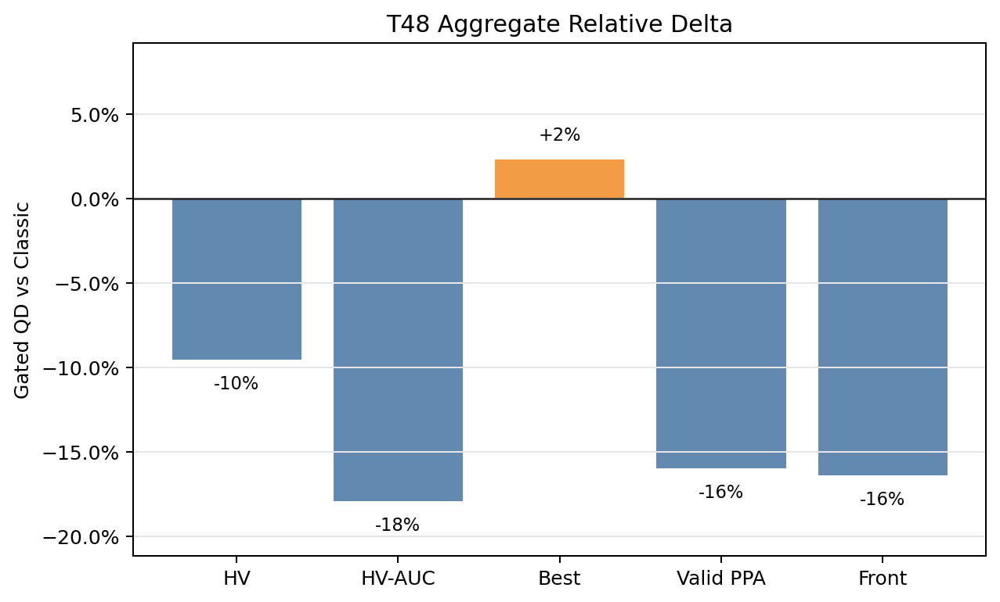
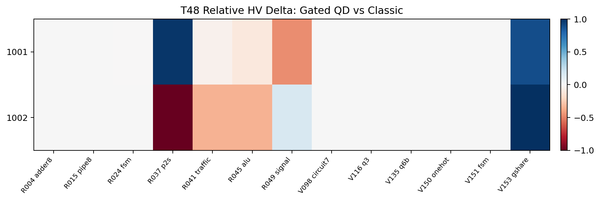
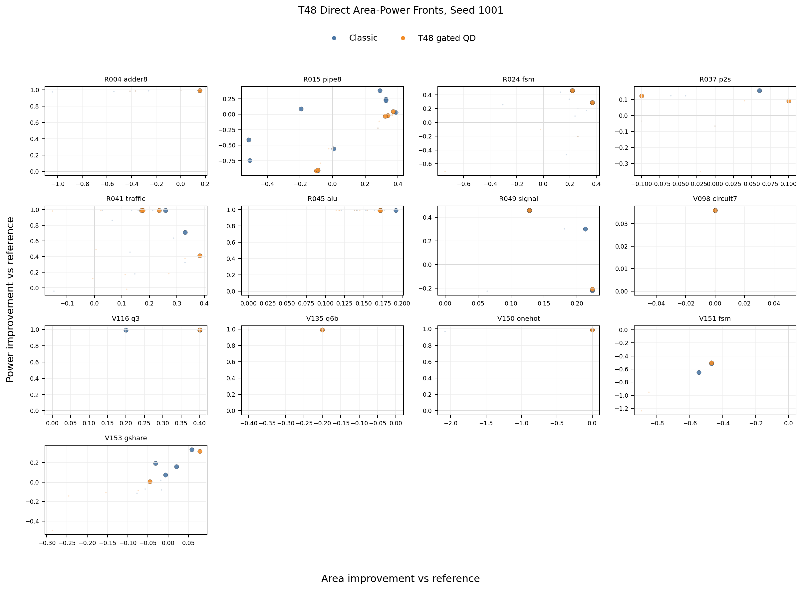
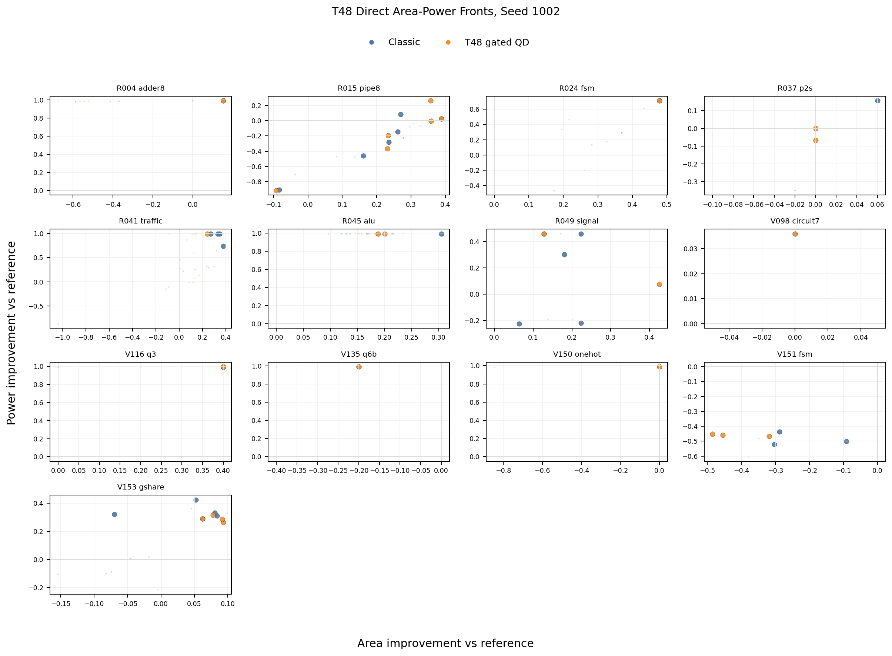
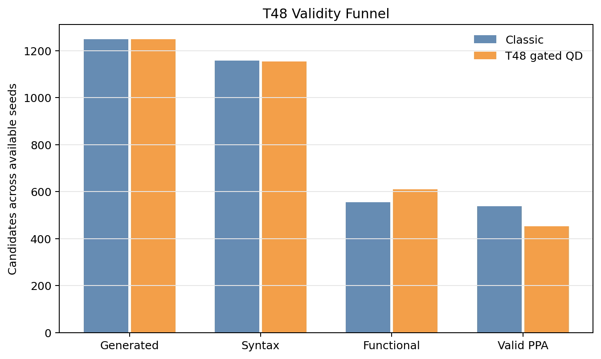

T48 Direct PPA Pareto Supplement
Static reader-facing figures for the two-seed hard/tuning screen.
The full linked Phase 03.1 viewer is in ../qd_ppa_viewer/.
-9.5%Mean HV
-17.9%Mean HV-AUC
+2.3%Mean best score
-16.0%Valid PPA
-16.4%Front points
3Yield warnings
Aggregate Direction

Paired HV Heatmap

Direct Area-Power Fronts


Validity Funnel
